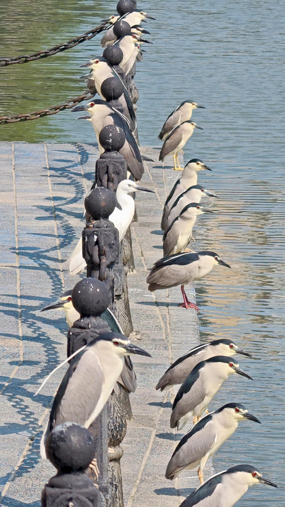
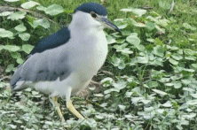
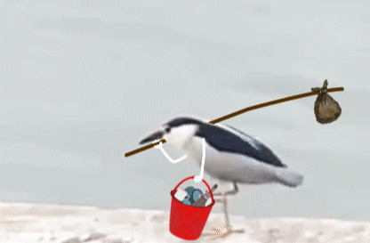
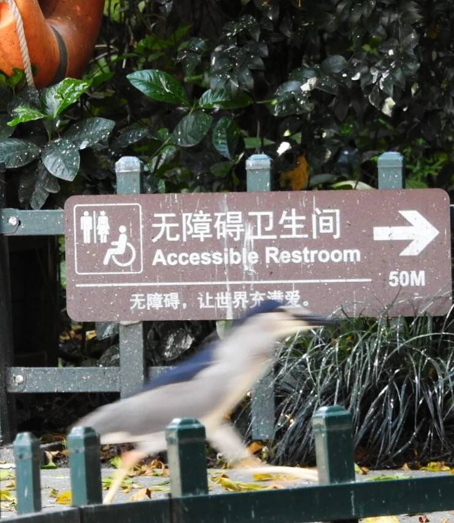
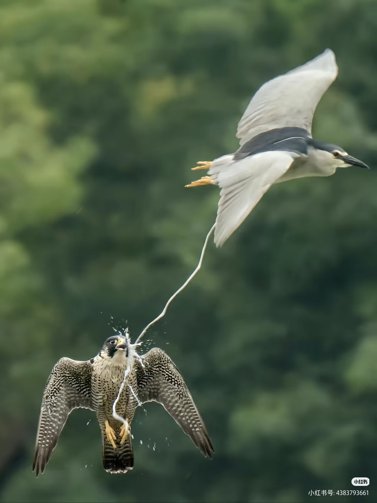
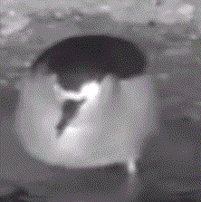
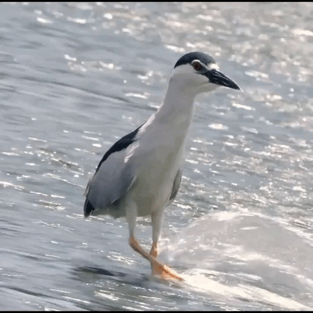

羽翼守望者


夜鹭亚科（Nycticoracinae） 是鹭科下特征独特的亚科， 包含夜鹭属、海南鳽属等类群， 全球现存大约十个有效物种。 广泛分布于温带与热带区域， 欧亚大陆、非洲、美洲、东南亚， 各地都能找到稳定的野生种群。 它们高度依赖各类湿地环境， 湖泊、城市池塘、河流浅滩， 水田沼泽、沿海红树林， 都是它们主要的栖息场所。 和日间活动的白鹭、苍鹭不同， 夜鹭亚科鸟类多为晨昏夜行， 正午会成群躲藏在树丛休憩。
该亚科鸟类体型多为中等尺寸， 整体体态短粗紧凑，辨识度高。 腿部偏短，适合浅滩长久站立， 脖颈粗短，捕猎时可瞬间弹射。 喙部粗壮尖锐，带有细微锯齿， 能够牢牢锁住滑溜的水生猎物。 成鸟羽色搭配简单却极具特点， 躯体灰白，头顶覆盖墨黑冠羽， 繁殖期会生长细长白色饰羽。 亚成鸟布满深浅交错褐纹， 依靠保护色融入枯枝泥土环境。 它们属于典型的伏击型捕食者， 会长时间静立栏杆、水边石块， 等待鱼虾、蝌蚪靠近再突袭。
夜鹭亚科普遍拥有集群繁殖习性， 每年春夏时节进入繁殖周期。 大量个体聚集在临水高大乔木， 利用干枯树枝搭建简易巢穴， 同一棵树上可聚集数十个鸟巢。 雌雄亲鸟会轮流完成孵卵工作， 单窝产卵数量维持三至五枚， 卵壳呈现柔和淡雅的淡蓝色。 完整孵化周期约二十一到二十五天， 雏鸟属于无法自理的晚成鸟类， 破壳后全身仅覆盖一层绒羽， 需要双亲持续投喂近一个月， 羽翼完全丰满才可下水独立生存。 城市人工湿地能见到稳定种群， 说明它们耐受轻度人类干扰。
普通夜鹭整体种群数量尚稳定， 但亚科内珍稀物种生存形势严峻。 例如珍稀鸟类海南鳽， 栖息地碎片化、人为频繁惊扰， 野外可观测繁殖个体持续减少， 是我国重点保护野生鸟类。 全球范围内湿地填埋开发， 水体农药残留造成环境污染， 人类活动打扰鸟类筑巢区域， 持续压缩该类群的生存空间， 不少区域本土种群逐年衰退。 多个物种录入IUCN濒危红色名录， 各国陆续出台湿地保护政策， 修复原生水岸植被，禁止非法猎捕， 以此保障野生种群长期存续。






夜鹭是分布最广的夜鹭亚科物种，繁殖于欧亚大陆、非洲、美洲及东南亚，冬季迁至热带地区。成鸟头顶及背部黑色，颈及胸灰色，腹部白色，眼周红色，虹膜黄色，具两根白色长冠羽。亚成鸟则为褐色纵纹，与成鸟迥异。
夜鹭是典型的晨昏性觅食者，黎明和黄昏时分活动频繁。它们常站在水边耐心等待，或缓慢行走，用锋利的喙快速刺捕鱼类、青蛙和水生昆虫。在城市公园的池塘边也常见其身影，适应力较强。
繁殖期（3-7月）集群营巢于树上，每窝产3-5枚淡蓝色卵，孵化期约21-24天。雏鸟为晚成性，需双亲喂食一个月左右才可独立。全球种群数量相对稳定，但局部地区因湿地开发而减少。
值得说明的是，在观鸟圈中，夜鹭因其独特(?猥琐?)的外貌和诙谐幽默的行为(呱！不要这么说咱，呱！)而受到观鸟者的喜爱，被观鸟人称为"夜师傅"

黄冠夜鹭主要分布于美洲的热带及亚热带沿海地区，从美国东南部至阿根廷北部。成鸟体长约55-70cm，具灰色身体、黑色头部、白色脸颊及醒目的黄色眼周斑块，因而得名。繁殖期头顶长出两根白色长饰羽。
其食性较特殊，偏好螃蟹、龙虾等甲壳类动物，也捕食小鱼、昆虫。常在海滩、红树林和沼泽边缘活动，行动较为缓慢，但捕食时反应敏捷。
由于沿海开发破坏其栖息地，部分地区种群有所减少，但在美国仍属常见物种。它们常在红树林或高大树木上营巢，每窝产2-4枚卵。

栗夜鹭分布于澳大利亚、新几内亚、印度尼西亚及太平洋岛屿。成鸟具栗色头部、颈部和胸部，背部深灰色，腹部白色，虹膜黄色。其体型与夜鹭相近，但色彩更为鲜艳。
主要栖息于淡水湿地、湖泊、河流沿岸，也出现于红树林和农田。以鱼类、蛙类、昆虫及小型爬行动物为食。常在水边浅滩处觅食。
繁殖期在雨季（9-3月），集群营巢于树上或灌丛，每窝产3-5枚卵。全球种群数量尚可，但在部分地区因栖息地丧失而下降。


（补充说明：棕夜鹭通常指栗夜鹭的澳洲亚种，但因分类存疑，此处不再赘述。以上三种为夜鹭亚科最具代表性的物种。）
夜鹭亚科各物种普遍面临栖息地丧失和环境污染的威胁，保护湿地生态系统对它们至关重要。通过监测种群动态、加强保护区管理、恢复湿地植被，可以有效维护这些神秘鸟类的未来。

夜鹭亚科是湿地生物多样性的重要组成部分，它们作为捕食者控制着水生生物的数量，同时其巢穴也为其他动物提供栖息环境。公众可以通过参与湿地保护志愿者活动、减少塑料污染、支持鸟类保护组织等方式，共同守护这些夜幕下的精灵。
📖 了解更多：点此处 查看拉姆萨尔湿地公约。